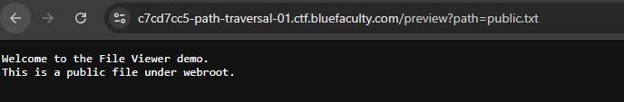
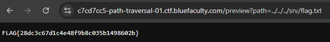

Path Traversal sur File Viewer (BlueFaculty - CH02)
Deuxième challenge de la série OWASP Top 10 chez BlueFaculty, cette fois sur une faille tout aussi classique que l'IDOR mais qui touche directement le système de fichiers : le path traversal.
Le contexte
L'appli s'appelle FFile ViewerF : une démo minimaliste qui affiche le contenu de fichiers via un paramètre dans l'URL :
/preview?path=public.txtElle retourne le contenu attendu :
Welcome to the File Viewer demo.
This is a public file under webroot.
Rien d'alarmant à première vue. Mais dès qu'une appli accepte un chemin de fichier tel quel en paramètre, la première question à se poser c'est : est-ce que je peux sortir du dossier prévu ?
Le raisonnement
Le paramètre path sert visiblement à construire un
chemin côté serveur, probablement un truc du style :
webroot/ + pathSi l'appli ne filtre pas les séquences de remontée de répertoire
(../), rien n'empêche en théorie de sortir du dossier
webroot pour aller fouiller ailleurs sur le système.
L'exploitation
Test direct avec une remontée de répertoire :
/preview?path=../../../srv/flag.txtÇa passe sans aucun filtrage. Le serveur va chercher le fichier en dehors du webroot, exactement là où je lui demande, et retourne :
FLAG{28dc3c67d1c4e48f9b8c035b1498602b}
Trois ../ suffisent à remonter jusqu'à la racine puis à
redescendre dans /srv/, là où traînait le flag.
Pourquoi ça marche
Le serveur construit le chemin final en concaténant bêtement une base fixe avec l'entrée utilisateur, sans jamais vérifier que le résultat reste bien à l'intérieur du dossier autorisé. En clair :
Attendu : webroot/public.txt
Réel : webroot/../../../srv/flag.txt → résolu en /srv/flag.txtLe ../ est un opérateur système standard (remonter d'un
niveau dans l'arborescence), et rien dans le code ne vient neutraliser
ou normaliser ce genre de séquence avant de l'utiliser pour aller lire
le fichier sur le disque.
Ce que je retiens
Le réflexe à avoir dès qu'un paramètre ressemble de près ou de loin à un chemin de fichier, un nom de fichier ou une référence à une ressource statique : tester une remontée de répertoire basique avant toute chose. Sur ce challenge il n'y avait aucune protection : pas de normalisation du chemin, pas de whitelist de fichiers autorisés, pas de sandbox.
Comment se protéger
- Ne jamais concaténer un chemin utilisateur tel quel : traiter l'entrée comme un identifiant (ID, slug), pas comme un chemin filesystem libre.
- Whitelist de fichiers autorisés : mapper un ID côté serveur vers une liste fixe de ressources ; refuser tout le reste.
- Normaliser puis vérifier le préfixe : si un chemin
relatif est inévitable, résoudre le chemin final (
realpath/ équivalent) et contrôler qu'il reste sous le dossier autorisé avant toute lecture. - Ne pas se contenter d'un filtre
../: un simple remplacement de chaîne est trop fragile (encodages, variantes). La vérification après résolution du chemin est plus fiable. - Droits OS du process : faire tourner l'appli avec un compte à privilèges minimaux, et ne pas placer de secrets / flags hors du périmètre prévu (ou mieux : hors du disque accessible à l'appli).
- Tests : ajouter des cas qui tentent de sortir du
dossier autorisé et attendent un refus (
400/403/404), pas le contenu du fichier.
Outils : navigateur uniquement, modification manuelle du paramètre d'URL.